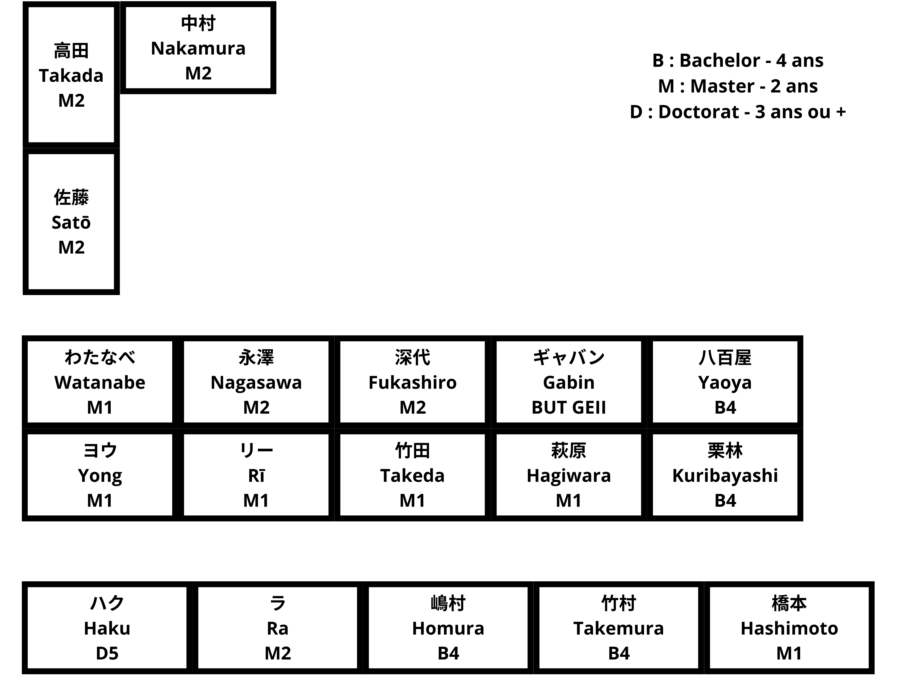
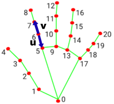
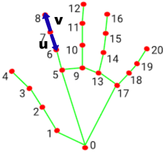
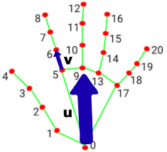
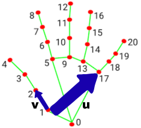
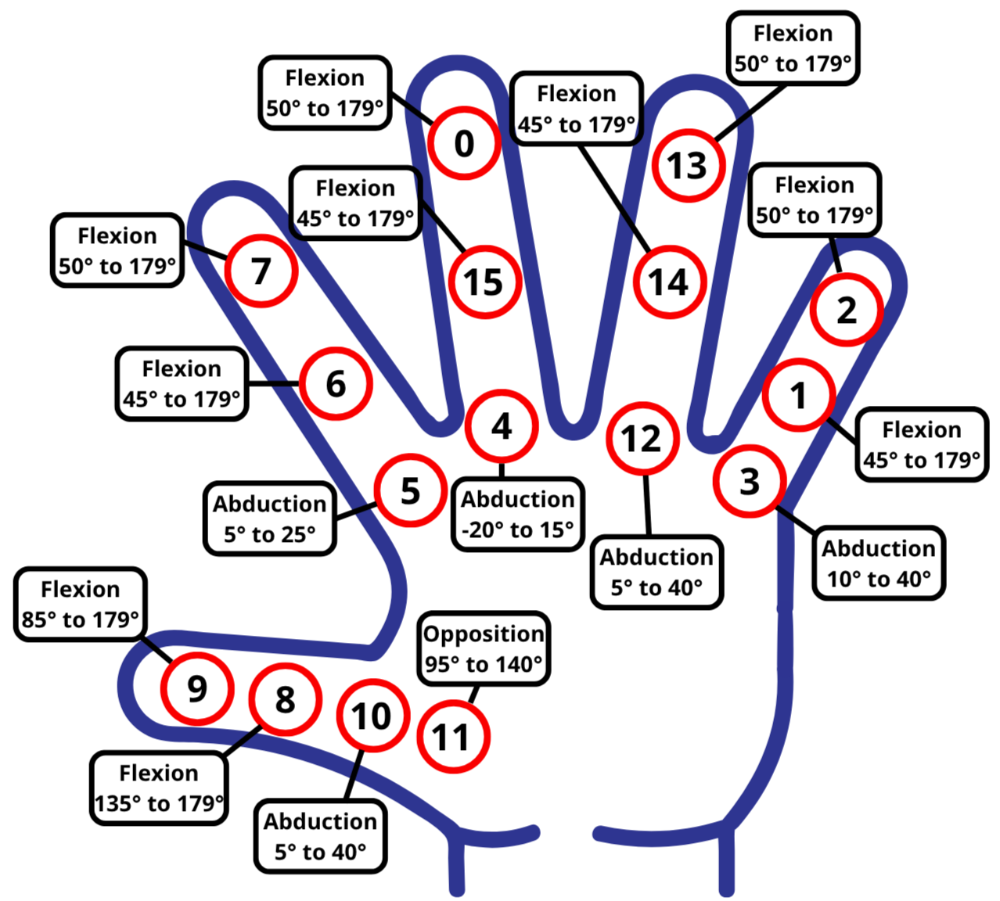
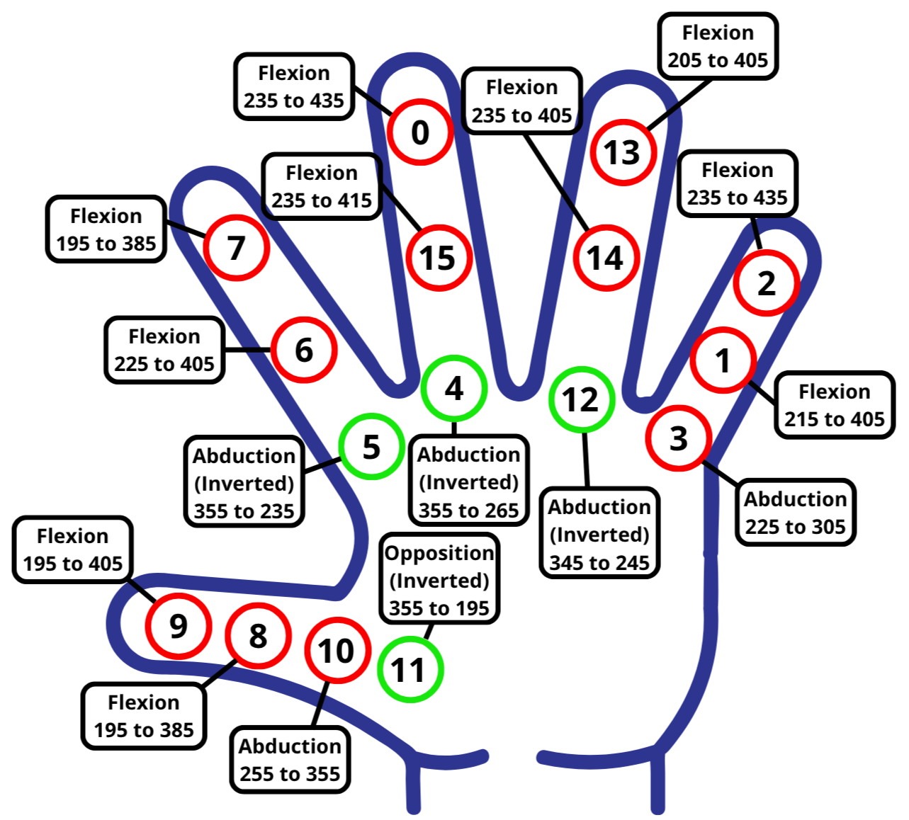
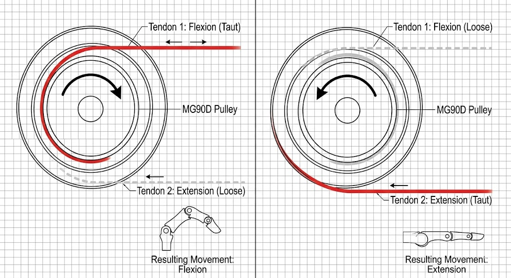

Environnement et Contexte de Recherche
J'ai intégré le laboratoire du Pr. Togo à l'UEC de Chōfu, spécialisé dans l'étude de la biomécanique et du contrôle moteur humain. Mon travail sur le projet ORCA a répondu à un double enjeu décrit par mon maître de stage :
• L'objectif ingénierie : Développer un système de téléopération fiable pour remplacer le travail manuel humain à distance (usines, environnements extrêmes ou dangereux). Ce dispositif permet également de collecter des bases de données de mouvements pour entraîner des IA d'actionnement.
• L'objectif scientifique : Comprendre les mécanismes de la dextérité humaine. En comparant les mouvements d'une main robotique anthropomorphe (qui réplique la structure osseuse et articulaire humaine) avec ceux de la main réelle, le laboratoire cherche à identifier les écarts pour percer le secret de notre agilité.


À gauche : L'équipe de recherche en salle de travail. À droite : Plan structurel du laboratoire.
Vulgarisation Technique (Démarche Ingénieur)

1. Acquisition Visuelle et Suivi IA
Contrainte : Capter les mouvements de l'opérateur sans l'équiper de capteurs physiques contraignants, tout en évitant de surcharger le processeur du Raspberry Pi 5.
Solution : Utilisation d'une caméra spatiale OAK-D Lite dont le processeur interne gère le redimensionnement matériel des images. Le flux optimisé est envoyé au framework MediaPipe qui extrait instantanément un squelette virtuel en 3D composé de 21 repères numériques.
Résultat : Un tracking fluide à haute fréquence qui s'exécute localement sans ralentir l'ordinateur central.

Flexion Proximale
Flexion Distale
Écartement Latéral
Opposition du Pouce2. Modélisation Cinématique Vectorielle
Contrainte : Transformer des repères de pixels de coordonnées spatiales abstraites en valeurs d'angles géométriques applicables à des articulations mécaniques.
Solution : Analyse géométrique directe par calcul vectoriel. À partir des landmarks fournis par l'IA, le script génère des vecteurs directionnels pour chaque phalange. L'angle exact de chaque articulation est isolé en appliquant la formule mathématique du produit scalaire.
Résultat : Un modèle mathématique complet capable de quantifier les flexions, les écartements latéraux (abductions) et l'opposition du pouce.

Limites Articulaires (Degrés)
Signaux de Commande (PWM)3. Traitement du Signal et Normalisation
Contrainte : Les micro-oscillations naturelles du flux de la caméra provoquent un sautillement continu des moteurs (jitter), entraînant surchauffe et usure mécanique.
Solution : Implémentation d'un filtre de zone morte (Deadband Filter) de 3° : la position du moteur n'est mise à jour que si le mouvement humain dépasse ce seuil. Ensuite, les angles théoriques sont traduits en registres de commande 12-bit (PWM) via une interpolation linéaire qui gère les inversions physiques dues au montage des servomoteurs.
Résultat : Stabilisation totale des actionneurs et protection des limites mécaniques de la structure.

4. Actionnement Mécanique et Gestion de Puissance
Contrainte : Piloter 16 servomoteurs MG90D en simultané. L'appel de courant massif au démarrage de plusieurs moteurs coupait instantanément la sécurité de la batterie.
Solution : Transmission mécanique par câbles (tendons) montés en configuration antagoniste push-pull. Pour lisser la demande d'énergie, le firmware du microcontrôleur Teensy applique un délai de cascade de 2 ms entre l'envoi des commandes I2C à chaque canal du driver PCA9685.
Résultat : Amortissement des pics d'intensité électrique, permettant l'utilisation stable du robot sur batterie.
Validation Expérimentale et Résultats
Les tests de postures (main ouverte, poing fermé, signe de victoire, pince avec le pouce) ont validé la réactivité et la précision du système de téléopération. Le temps de latence entre le mouvement humain et la réplication mécanique est imperceptible, confirmant l'efficacité du traitement sur cible embarquée.
Bilan de l'Expérience
Ce stage au Japon a validé mes compétences en programmation (Python, C++), en traitement du signal et en gestion de puissance électronique au sein d'un projet de recherche international. Cette immersion m'a également permis d'adopter la rigueur de travail propre aux ingénieurs japonais et de pratiquer l'anglais technique quotidiennement.
Remerciements
Je remercie chaleureusement le Pr. Togo pour m'avoir accueilli au sein de son laboratoire et m'avoir accordé sa confiance, ainsi que l'ensemble des étudiants chercheurs du Togo Lab pour leur intégration et leur aide technique. Je tiens également à exprimer ma gratitude envers les responsables de formation du BUT GEII de l'IUT de Bordeaux qui ont soutenu et encadré la réalisation de cette mobility internationale.